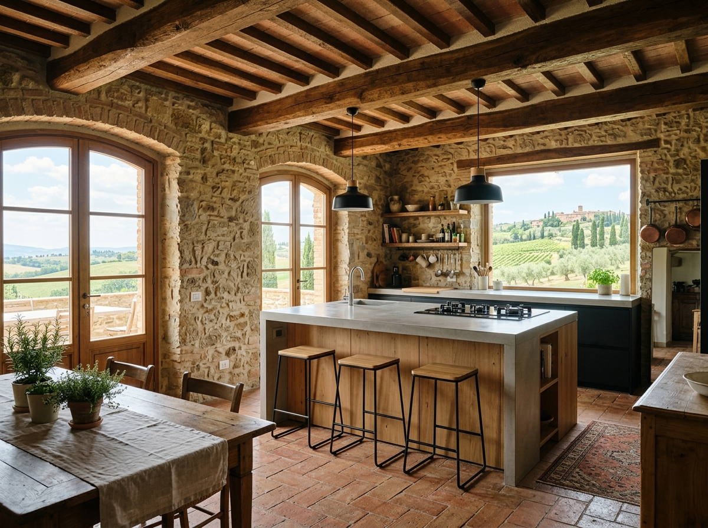
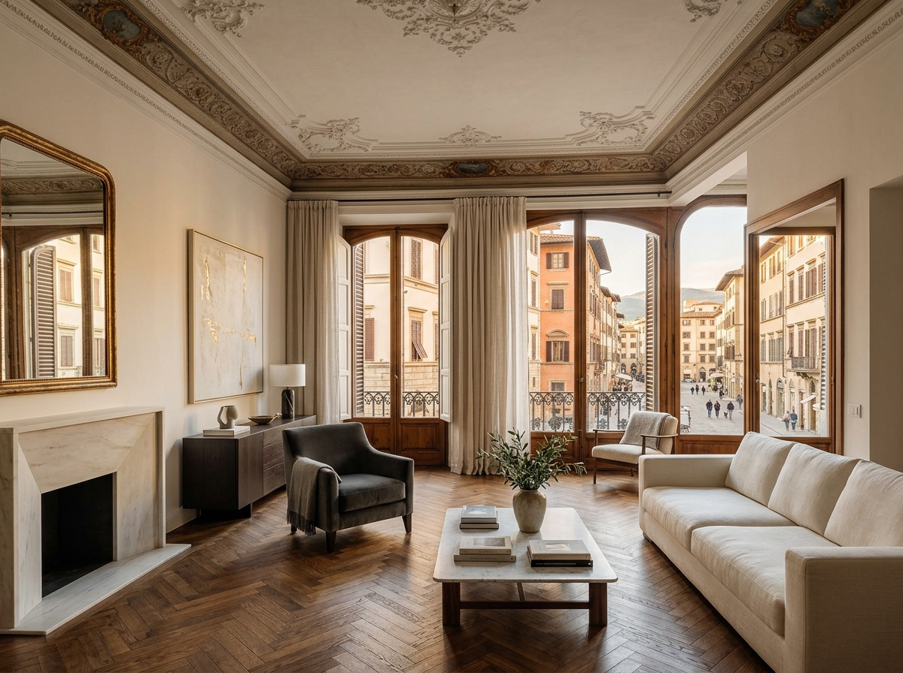
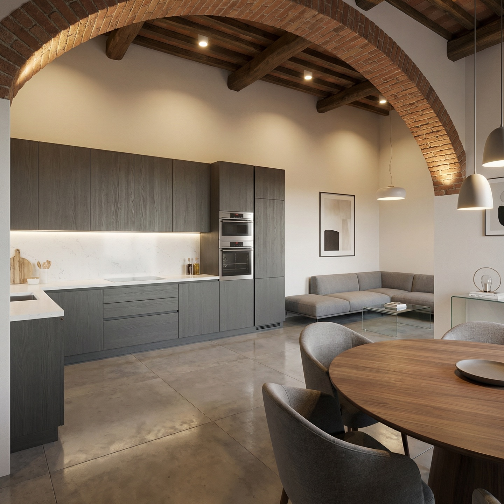
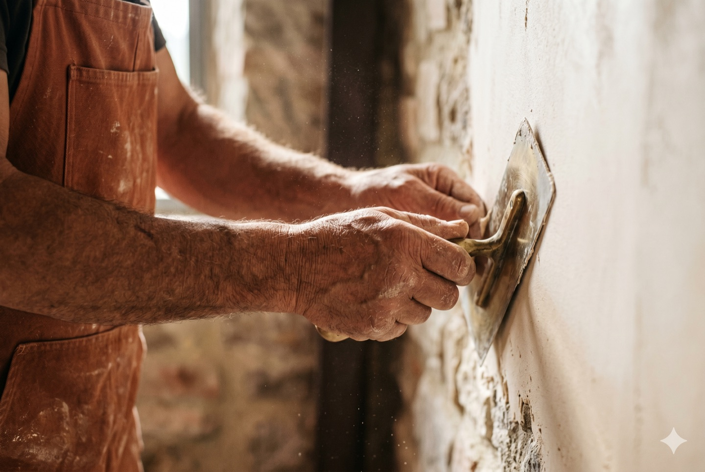

Historical Respect
We honour the original stone, olive wood and terracotta architecture, maximising aesthetic potential and perceived market value. Every project begins by listening to the building.
“Where others choose between speed and beauty, we engineered systems to achieve both simultaneously.”
With the Metodo Toscan we combine architectural design, municipal permits, turnkey construction, bespoke furnishing and hospitality launch into a single contract across Florence and Tuscany. Your Prezzo Chiuso Toscan (€1,350–€2,400/m²) is locked before works begin, delivery takes 5–12 months with contractual delay penalties, and guest operations continue seamlessly through the Ciclo Blue Arroyo.

Authentic Tuscan craftsmanship organised as a repeatable, transparent and contractually guaranteed engineering system.
We honour the original stone, olive wood and terracotta architecture, maximising aesthetic potential and perceived market value. Every project begins by listening to the building.
Every construction site is engineered for rapid technical due diligence, efficient 5-SAL execution and immediate rental or sale readiness. Time is your most valuable asset.
We deliver Tuscan luxury through industrialised BIM design, direct material procurement and strict quality control: craftsmanship as a system, not an unpredictable exception.
Three construction lines coded with the official Tuscan Earth palette: Olive for Colonico, Terracotta for Borgo and Antique Gold for Villa.
“Every Stone Tells a Story — Transforming Tuscany’s real estate landscape through efficient renovation and historical respect, delivering exceptional properties ready to perform from day one.”Toscan Costruzioni · Brand Book Version 1.0 · Tradition in the soul · Efficiency in execution · Profitability in every stone
Every historic property in Tuscany requires a tailored structural, urban-planning and hospitality layout strategy. Here are our four core scopes of intervention.

Full off-season refurbishment of existing hotels and conversion of historic palazzi into contemporary 4-star and 5-star boutique properties: soundproofed en-suite bedrooms, reception, breakfast rooms, spa, fire safety (CPI) and custom FF&E.
Conservative restoration of stone farmhouses, country estates and wineries across Chianti, Siena, Val d'Orcia and Maremma: agricultural permits (PMAA), seismic strengthening, ventilated timber/terracotta roofs, Soprintendenza pool permits and hybrid heat-pump systems.

Subdivision of large apartments or entire floors in Florence and Tuscan art cities into independent suites: one bedroom = one private en-suite bathroom, certified acoustic insulation, ducted A/C, smart keypads for self check-in and full CIN compliance.
Conversion of former offices, commercial units or entire buildings into hospitality residences or high-efficiency private homes, managing every municipal and Soprintendenza heritage permit up to the final habitability certificate.

Drag the central slider (or use your keyboard arrows) to compare the property before construction started and the turnkey asset delivered by Toscan Costruzioni.
Initial challenge: a single 280 m² apartment with obsolete MEP systems, only one bathroom and traditional rent insufficient to cover extraordinary maintenance.
Completed work: urban subdivision into 6 independent suites with private en-suite bathrooms, certified acoustic insulation, ducted A/C and turnkey furnishing.
Structural consolidation of timber and terracotta floors, ventilated roof reconstruction, 8 en-suite bedrooms and high-efficiency heat pump plant.
Change of use from office to medium-term residence: 14 en-suite bedrooms, shared kitchen, laundry room and smart electronic access.

 Render di progetto — Cantiere in avvio
Render di progetto — Cantiere in avvio
Executive design and site launch for the conservative restoration of a 520 m² historic villa divided into 6 independent residences with park and pool.
You never have to sign a full construction contract blindly. With our staggered entry system you can start with a 60-minute Masterclass di Cantiere (€150, 100% deducted from subsequent works) with our specialist Director, and move forward step by step.
Choose your 60-minute session on the topic most relevant to your property: 1A. Surveyor & Urban Planning (subdivisions, drains, Soprintendenza), 1B. Business Plan & Italian Bank Leverage (purchase + construction SAL mortgage), 1C. Site Administration & 5 SAL, or 1D. Pre-Sales Cantiere (selling or leasing units off-plan during construction).
Before signing a purchase offer or approaching an Italian bank, our Surveyor inspects structures, roof, MEP systems and waste stacks, delivering a bank-ready cost/revenue business plan.
We design the en-suite bedroom layouts, file municipal permits (CILA, SCIA, Soprintendenza), prepare photorealistic renders for Pre-Sales Cantiere and sign the executive Bill of Quantities that locks your lump-sum price to the cent.
On larger properties we can start with a first sample suite. The entire site progresses through the Percorso a 5 SAL (15% start, 25% structures, 25% MEP, 25% finishes, 10% final testing), with Friday photo/video reports in English, verified DURC and €250/day delay penalties.
Upon handing over the keys and the 10-year structural policy, our group companies take over at day zero: regulatory compliance (CIN/Questura), 60°C hotel-grade linen staging and direct tourist bookings. Approved Members also access opening co-investment sites starting from €2,000.
Select property type, approximate size and intervention level to view indicative turnkey €/m² ranges and expected construction months in Tuscany.
Note: this is an indicative parametric estimate based on Toscan Costruzioni sites. Your binding Prezzo Chiuso Toscan is locked after the free technical inspection.
Request your free 48h feasibility studyA traditional builder hands over the keys and disappears: if mistakes were made on acoustics, plumbing or room layout, you only find out when maintenance bills or bad guest reviews arrive.
Toscan Costruzioni is the construction arm of Blue Arroyo Group. We build every property knowing exactly how it must perform for paying guests, activating the Ciclo Blue Arroyo the day construction finishes.
Our turnkey contracting system uniting design, municipal permits, fixed-price construction, furnishing and hospitality launch under one contract.
The total lump-sum price locked upon signing the executive Bill of Quantities: any technical site unforeseen remains Toscan Costruzioni’s responsibility.
Protected payment schedule across 5 verified Stage Payments (15%, 25%, 25%, 25%, 10%) paid only after works are verified on site.
60-minute 1-to-1 session (€150, 100% credited towards works) with our Surveyor, Bank Business Plan Director, SAL Admin or Pre-Sales Director.
Our strategy to pre-sell or pre-lease units off-plan during construction through hospitality layouts, photorealistic renders and a sample suite.
Immediate handover of the completed property to itassistance, Blue Arroyo Cleaning and SmartsBookings to generate revenue from day one.
Complete the 2 quick steps below: an English-speaking engineer in Florence will reply within 24 business hours.